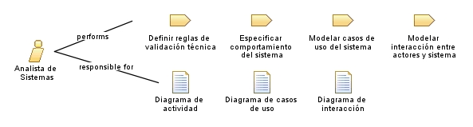

| Role: Analista de Sistemas |
 |
|
Relationships
 |
||
| Primary Performs | ||
|---|---|---|
| Modifies |
|
|
Main Description
| Encargado de analizar los requisitos para convertirlos en una especificación técnica del sistema. |
Staffing
| Skills | Análisis y diseño de sistemas, Especificación de requisitos, Comunicación efectiva, Resolución de problemas |
|---|